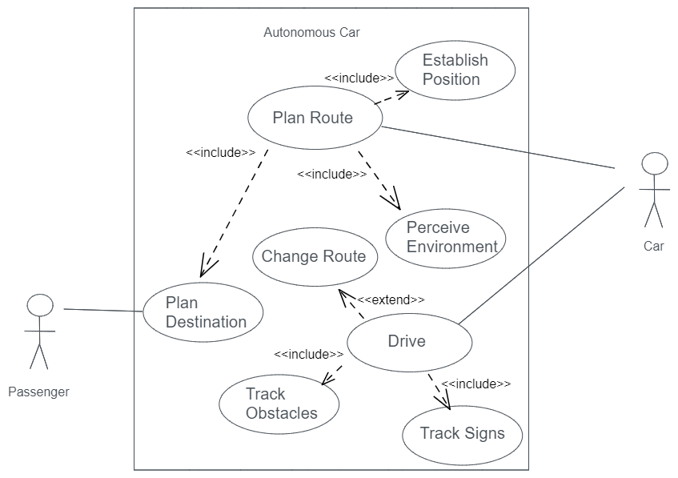
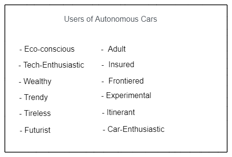
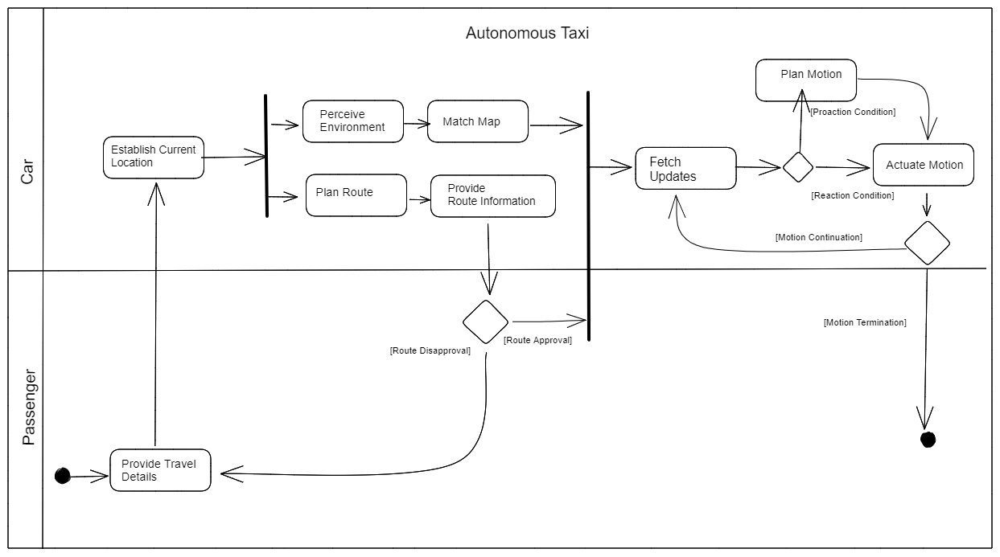

Requirements Analysis
Examples of modelling tools for Requirements Analysis:
Use Case Diagrams
A use case is a functional requirement that an information system is expected to meet. They are sometimes be business-centered, but they are always associated with particular categories of users, or actors. Relationships that exist between use cases are limited by convention to: to generalization, inclusion and extension relationships. The relationships among use cases and actors is modelled using a use case diagram.
Example
An example of a use case diagram for an autonomous car.
Applicability to a Software Development Lifecycle
Benefits:
- The creation of an ensemble of use case diagrams, could be a medium to resolve any interpersonal ambiguities about requirements. The construction process is educationally valuable.
Problems:
- The informality of them makes them redundant to technical modelling.
- The structure that they are confined to restricts their potential as an infographic.
- Use case diagrams provide little more information than a list of actors and software expectations, at the cost of visual complexity.
- It's possible to choose multiple different viable sets of use cases that accurately label expected responses of software, making validation of them as models difficult.
- An actor may be involved in many use cases, resulting in either visual clutter, or the aesthetic absence of relationships from diagrams and loss of information.
- The extension-relationship between use cases is a baroque way to say "sometimes do this".
- Use case diagrams lack the notion of interfaces, which is essential to modelling detail related to how actors expect to use software.
- The diagrams are too rigid for developmental value. The distinction between use case relationships and actor-use case relationships is too restrictive. I'd like to explore the abstraction of use case diagrams to gain properties such as modularity, by using actors/interfaces as anchor points to combine, use case diagrams, and recursion, by allowing use case interfaces to replace actors, for the replacement of a use case by a use case diagram. Overall, I believe this would create more value in an incremental software development lifecycle, where streamlining the transition between analysis and design saves time and money.
Pen Portraits
Users are normally an essential requirement for the success of software. Groups of users with shared descriptions may behave similarly, so identifying shared description can be valuable to business. A pen portrait is an informal description of a person or group of people.
Example
An example of a pen portrait for the users of autonomous car.
Applicability to a Software Development Lifecycle
Benefits:
- A range of adjectives clearly depicts a range of potential users.
- User descriptions enhance user context models, and can highlight potential values users might have, which might be informative to design and marketing decisions.
Problems:
- The informality of pen portraits makes them redundant to technical modelling.
- The meaning of descriptions may be open to interpetation.
- Pen portraits don't depict the relationships between descriptions. Clusters of descriptions may describe certain types of users exclusively, while other descriptions may be inclusive of all users.
Activity Diagrams
Activity states are chunks of computation a software is expected to do, and an activity diagram is a model of the flow between activity states for an information system. An activity diagram can include conditional branching, concurrent branching and computational swimlanes.
Example
An example of an activity diagram a autonomous car.
Applicability to a Software Development Lifecycle
Benefits:
- Details of interactions between users is clear, providing information useful to interface design.
- Details of computational flow is included, and provides a way to validate the model.
- The relationships between computational chunks that are depicted in an activity diagram, resemble programming logic to some granularity of detail, minimising the gap between requirements analysis and programme design.
Problems:
- Lots of users on a single activity diagram might be visually overwhelming.